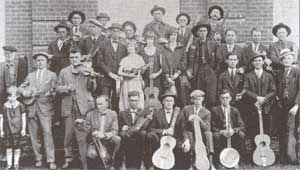
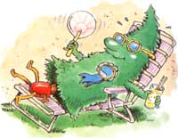

Bits & Pieces
If your family becomes mysteriously ill, you might want to examine your carpets.
Old Time Fiddlers' Convention
More than 60 years ago the floor of a Tennessee high school auditorium almost collapsed under the weight of a large, footstomping crowd. The year was 1925 and the stompers had come to see the first fiddlers' convention of Mountain City, Tennessee. According to Joe Wilson, Head of the Traditional Arts Division of the National Endowment for the Arts in Washington, D.C., the crowd spilled right out of the room that day and organizers had to open another auditorium for the overflow.
Needless to say, the convention became an annual event. Unfortunately, it only lasted five years before becoming a victim of the Depression. Since its revival in 1977, however, the convention has remained a true crowd pleaser.
Eva Moore will attest to that. At 73, she's the only living competitor of that first convention and she still loves to watch the bands compete today. Ask her favorite memory and she'll tell you about the convention's first dance competition: "I was only five years old and I slept through most of the contests, but Mom woke me when they announced the dance category and headed me towards the stage. I stood there dazed, but when the band started playing, I danced around. Before I knew it, people from the crowd threw their change at me."
By the song's end, Eva had gathered $25 worth of change, which she saved in a jar and had her Dad put towards buying a pony for her. "I lived three miles from school and I rode that pony every day." She also took home first prize that year: "A yellow scarf that I kept throughout my teen years:'
This year the Mountain City Rotary Club will sponsor the Old Time Fiddlers' Convention on Saturday, August 28. Head for the Old Mill Music Park in Laurel Bloomery Tennessee (located on Highway 91 between Mountain City and Damascus, Virginia), and don't forget your blankets and chairs. If you're interested in putting your musical talents to test, you can register for competition on Saturday until 7 p.m.
Just don't bring your electric guitars; only traditional string instruments are appreciated on these grounds, with the exception of the harmonica. Judged categories include: fiddle (also bass fiddle and twin fiddles), banjo, guitar, man dolin, dulcimer, autoharp, folk song, and band. Individual musicians are permitted two backup players and time to perform one song (no runoff competition). Bands, made up of at least three instruments, also get to play one song, though the top three bands get to perform two more. As for fortune (to go with your fame), $1,100 worth of prizes will be awarded. Most first-place winners will take home $25 and the grand-prize fiddler may walk away $150 richer. For more information, call 615/727-9595.
Christmas Tree Pageant
August may seem a bit premature to be thinking about Christmas trees, but 'tis the season for professional growers. Trees are-also on the mind of horticulturist Erwin Williams, who's responsible for making sure that the Christmas trees at the White House are picture perfect this December.
Ever wonder who actually selects the trees? Gary Sander of Corvallis, Oregon, who won the honor in 1991, can tell you. "Every other year, in August, there's a kind of Christmas tree beauty pageant, and growers in each state submit trees to compete for the biennial National Christmas Tree Contest," says Sander. Two winning growers are recognized and awarded plaques by the National Christmas Tree Growers' Association in Wisconsin. They also win the honor of choosing trees from their state to adorn rooms in the White House during that and the following year's Christmas seasons."
It may not seem all that important, but 100,000 tourists patiently wait in line each year to oooh and aahh over the festive scene. That's why the White House sends Williams, who is the White House grounds landscaper, and chief usher Gary Walters to the winning state to approve the chosen ones. According to Williams, trees must meet certain standards-having a shapely trunk, for in stance: "Any tree under 18' is too short. And a tree must be narrow enough to fit through a 54"-wide door. It must also be tall enough for its top to fit into a chandelier socket in the Blue Room."
In 1991 two suitable trees got the trip of their lives: They were shipped from Oregon to Washington, D.C., in a National Guard plane and then brought to the north portico of the White House in a wooden wagon drawn by two Belgian draft horses. Gary Sander made a brief presentation and Barbara Bush officially received the trees. An 18 1 / 2 Douglas noble fir graced the Blue Room that year, while a 12' Douglas fir was placed in the Bush family's private quarters.
Oregon trees also graced rooms in the White House in 1992. This Christmas, a North Carolina grower will have the honor of seeing his state trees in the mansion.
To enter the competition, contestants must be members of the National Christmas Tree Growers' Association, which publishes a quarterly journal about raising and marketing Christmas trees. For membership information, write to: Christmas Tree Growers' Association, 611 E. Wells St., Milwaukee, WI 53202.
- Marian Behan Hammer
The Danger of Toxic Carpets
In March of 1985, Linda Sands installed 130 yards of carpeting in her Montpelier, Vermont, home. Within hours, she and her five children began to experience headaches, dizziness, burning throats, and double vision. After weeks of chasing down the carpet installers, the Vermont Department of Health, a private physician, and a laboratory, Sands had her carpet removed and left her home for six weeks while her house was thoroughly cleaned. Unfortunately, the damage was done. To this day, her family remains gripped by chronic illness that Lisa believes is a direct result of the carpet installed eight years ago.
In 1992, she told her story to a Senate subcommittee hearing which Congressman Bernard Sanders and Senator Joseph Lieberman, chairman of the Senate Consumer and Environmental Affairs subcommittee, attended. Members were alarmed and ordered testing of carpet samples by Dr. Rosalind Anderson of Dedham, Massachusetts. Dr. Anderson exposed four mice to a seven-year-old sample of Lisa's carpeting. All four mice were dead within an hour. Carpeting from Montpelier High School and the Vermont State Agricultural Building have also proved toxic.
Dr. Anderson extended her test and found that, of 100 suspect samples submitted to her office in succeeding months, virtually all produced ill-health symptoms in the test mice-ranging from tremors to death. She labeled the test results "remarkable." "We are finding a product that just polishes them off one after another after another," Dr. Anderson reported. Approximately 25% of randomly selected new carpet samples also tested potentially dangerous. The toxic properties did not seem isolated to certain brands.
Although Anderson Labs have not iso lated all the offending chemicals in the test samples, one that appears in many of the carpets is a volatile organic compound called 4-PC (4-phenylcyclohexene).
Congressman Sanders has since gathered numerous reports from consumers and workers in carpet-manufacturing plants describing health problems similar to those of Linda's family. His efforts have finally resulted in formal hearings before the House of Representatives, scheduled for July. Sanders hopes the hearings will ultimately lead to further testing and EPA restrictions on dangerous chemicals.
|
 COURTESY BILL DOTSON, MOUNTAIN CITY, TN The Mountain City fiddlers first gathered 68 years ago; Eva Moore (bottom, left) stib attends conventions. |
 CHARSLES PEALE |
|